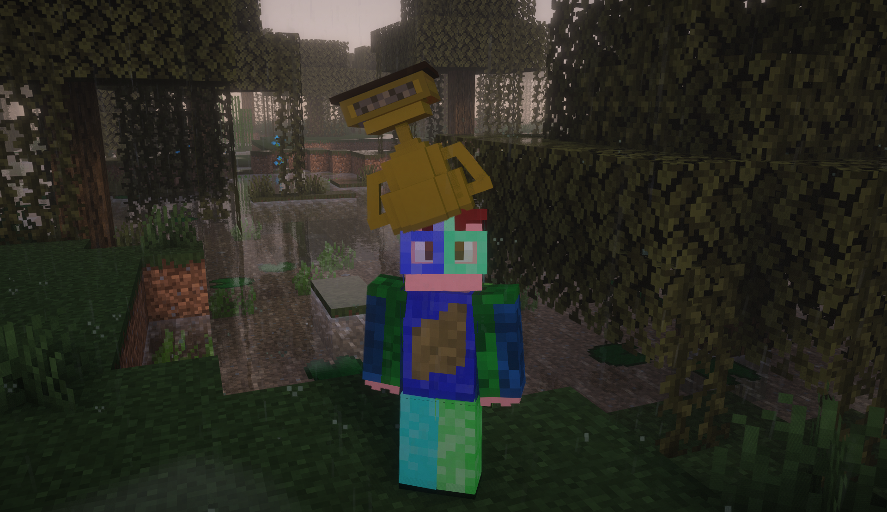
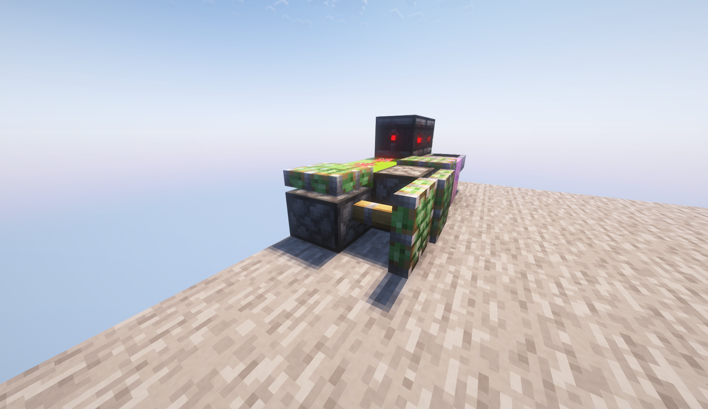

Sobre mí


Alessio2122 es un jugador de Minecraft y (casi) programador al que le gustan los mecanismos, la ingeniería y aprender cosas nuevas que le puedan ser muy útiles en su día a día.
En esta página web se publican algunas de sus ideas, invenciones y construcciones, ademas de sus videos, que complementan mucha de la información o añaden otros temas.